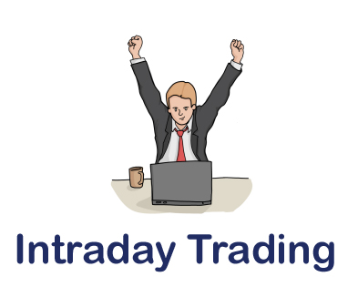

Day Trading (intraday trading)
Day traders are people who live off trading cryptocurrencies and spend most of their time trading. Whether it's buying or selling assets, margin trading or swapping perpetual contracts, they make a dozen different trades every day, hoping to catch favorable price movements. The rewards can be overwhelming, but it can be a little daunting for newbies - especially if you don't know much about technical and fundamental analysis or have little experience in the markets. It can take months or even years of loss before you truly become a successful day trader.
In the cryptocurrency market, day traders have to stick to charts and watch price movements closely. Be prepared to cut losses, break even, and switch frequently to avoid bull or bear traps and losses. As a day trader, you have to befriend cryptocurrency price fluctuations and literally live by them no matter which direction the market is heading. There is a counter trade for every price movement at the pivot point, which is a great opportunity to increase the amount.
Day trading is fast and accurate solutions designed to minimize risk and maximize your profits. Of course, no trader can be 100% right, so be prepared to close positions even with significant losses. Learn to identify possible levels of support and resistance, re-enter your trades at the right time, set targets and also set stop loss, and sooner or later you will develop your day trader skill.